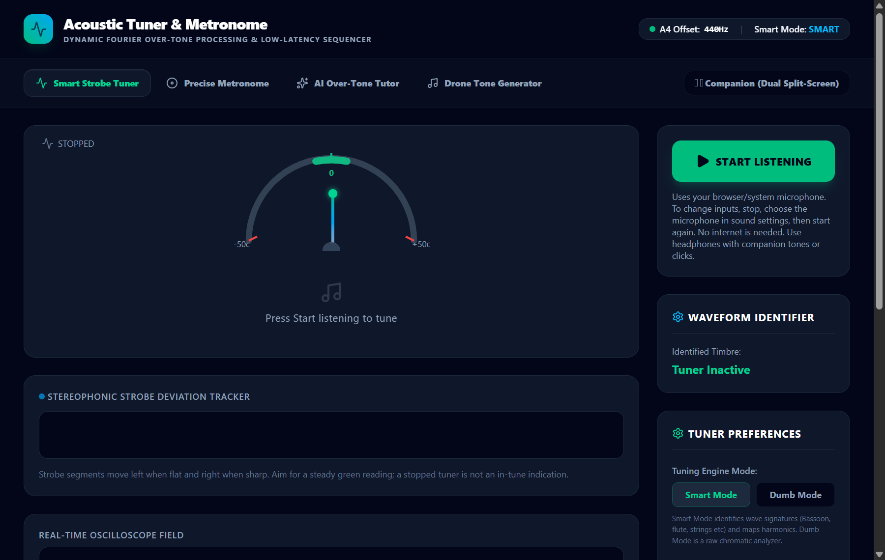

Measure how sharp or flat a note is.
The Windows tuner shows whether a note stays sharp or settles as it rings. Try its pitch detector here with silent, generated notes. Concert A is a familiar baseline. Low B-flat, near the bottom of the bassoon’s range, is the short-buffer case that exposed a bug.
Try the pitch control

Compare Concert A and low B-flat
Start at +20 cents, then move the slider toward zero. The detector reads the generated waveform, so you can compare the same note sharp, in tune and flat without touching a tuning peg.
Estimated pitch · generated samples · no microphone
Use the pitch bench offline
Download the source ZIP, extract it, and open index.html in Edge on Windows. No installation or microphone is needed.
Focus the slider and use the arrow keys to compare three positions: +20 cents (about 445 Hz), zero (440 Hz) and −20 cents (about 435 Hz).
Read the pitch detectorWhat went wrong at 58 Hz
A 2,048-sample clip can contain only a few periods of a low note. The earlier estimator favored short lags and missed the low B-flat fixture. Normalizing by the energy of the overlapping samples and interpolating the peak gave a reading of about 58.27 Hz in the replay.
Across 16 saved synthetic cases, readings within five cents went from 3 to 16. That is a comparison on test signals, not a microphone accuracy claim. A strong second harmonic can still produce an octave error in this detector.